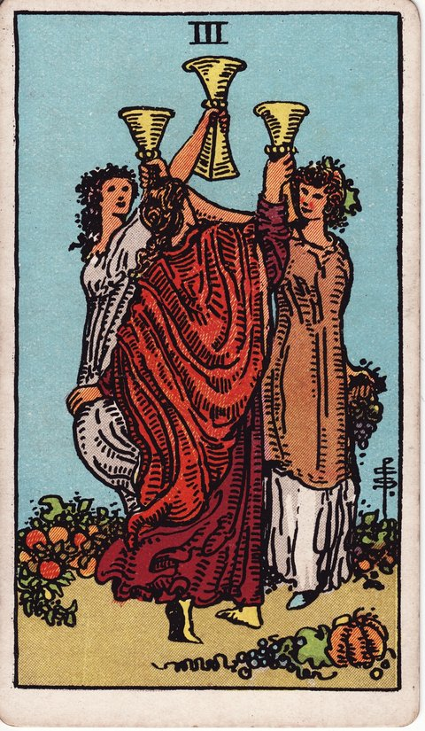

컵 · 타로 카드 백과사전
컵 3

정방향
키워드: 우정과 축하 · 즐거운 모임 · 공동체의 기쁨 · 겹치는 경사 · 왁자한 웃음 · 어깨동무
조언: 혼자 이루기보다 주변 사람들과 기쁨을 함께 나눠보세요.
연애운
솔로
친구들의 소개나 모임을 통해 좋은 인연을 만날 수 있는 시기입니다. 자연스러운 자리에서 마음이 통하는 사람을 알아볼 수 있어요.
커플
주변 사람들의 축복 속에서 관계가 더 단단해지는 시기입니다. 함께 아는 사람들과의 모임을 늘려보는 것도 좋습니다.
재물운
소비
친구들과의 즐거운 모임에 기분 좋게 지출하는 시기입니다. 즐거움도 좋지만 지출 규모는 한 번씩 점검해보세요.
투자
지인들과의 정보 공유를 통해 좋은 투자 기회를 얻는 시기입니다. 여럿의 의견을 참고하되 최종 판단은 직접 내려보세요.
취업운
구직
지인의 소개나 네트워킹을 통해 좋은 기회를 얻을 수 있는 시기입니다. 주변에 구직 소식을 적극적으로 알려보세요.
이직
새로운 곳에서 동료들과 빠르게 어울리며 자리 잡는 시기입니다. 먼저 다가가는 태도가 적응을 훨씬 수월하게 만듭니다.
직장운
팀워크
회식이나 팀 행사를 통해 팀워크가 좋아지는 시기입니다. 격식 없는 자리에서 서로를 더 잘 알게 될 수 있어요.
개인성과
동료들의 인정과 축하 속에서 성취감을 느끼는 시기입니다. 이 기쁨을 주변과 함께 나눠보세요.
사업운
창업준비
지인들의 응원과 협력 속에서 사업을 시작하기 좋은 시기입니다. 초반 네트워크를 잘 활용하면 큰 힘이 됩니다.
운영중
협력사나 고객들과의 좋은 관계로 사업이 활기를 띠는 시기입니다. 감사한 마음을 표현하면 관계가 더 오래갑니다.
학업운
시험준비
친구들과 함께 공부하며 서로 자극이 되는 시기입니다. 어울리는 즐거움과 학습의 균형을 잘 맞춰보세요.
진로고민
선후배나 동기들과의 대화 속에서 진로에 대한 힌트를 얻는 시기입니다. 다양한 경험담을 참고해보세요.
건강운
신체
사람들과 어울리며 활동량이 늘어나 컨디션이 좋아지는 시기입니다. 즐거운 활동을 꾸준한 습관으로 만들어보세요.
정신
즐거운 모임 속에서 스트레스가 해소되고 기분이 좋아지는 시기입니다. 좋아하는 사람들과의 시간을 자주 가져보세요.
대인관계운
새로운 인연
여러 모임 속에서 자연스럽게 새로운 인맥이 넓어지는 시기입니다. 다양한 사람들과의 만남에 열린 마음으로 임해보세요.
기존 관계
오랜 친구들과의 우정이 더욱 돈독해지는 시기입니다. 함께한 추억을 나누는 자리를 마련해보세요.
명예운
주변 사람들의 인정 속에서 좋은 평판을 쌓아가는 시기입니다. 함께 나누는 태도가 사람들의 신뢰를 얻는 힘이 됩니다.
이사운
지인들의 도움과 축하 속에서 즐겁게 이동을 준비하는 시기입니다. 주변의 도움을 편하게 받아들여보세요.
자식운
가족, 친지들과 함께 아이의 성장을 축하하는 즐거운 시기입니다. 여러 사람과 함께하는 시간이 아이에게도 좋은 추억이 됩니다.
역방향
키워드: 과도한 유흥 · 소원함 · 고립감 · 텅 빈 곁자리 · 붕 뜬 마음 · 먼저 내민 손
조언: 겉도는 모임보다 진심을 나눌 수 있는 사람을 먼저 챙겨보세요.
연애운
솔로
가벼운 만남에 치우쳐 진지한 인연으로 이어지지 못할 수 있는 시기입니다. 어울리는 재미보다 진심을 나눌 상대인지 살펴보세요.
커플
주변의 방해나 잦은 모임으로 둘만의 시간이 줄어들 수 있는 시기입니다. 의식적으로 둘만의 시간을 따로 마련해보세요.
재물운
소비
잦은 모임과 술자리로 지출이 눈덩이처럼 불어날 수 있는 시기입니다. 이번 달 모임 횟수를 미리 정해두는 것이 도움이 됩니다.
투자
분위기에 휩쓸려 검증되지 않은 투자에 휘말릴 수 있는 시기입니다. 주변의 권유라도 스스로 다시 확인해보세요.
취업운
구직
친분에 의존하다 정작 실력을 보여줄 준비가 부족할 수 있는 시기입니다. 인맥보다 실질적인 준비에 시간을 더 쏟아보세요.
이직
새 직장에서 어울리는 데만 신경 쓰다 본업을 소홀히 할 수 있는 시기입니다. 관계도 좋지만 성과로 신뢰를 보여주세요.
직장운
팀워크
잦은 회식이나 사적인 모임이 오히려 팀 분위기를 해칠 수 있는 시기입니다. 공적인 자리와 사적인 자리를 구분해보세요.
개인성과
동료 사이의 뒷말이나 소문에 휘말릴 수 있는 시기입니다. 근거 없는 이야기에는 거리를 두는 것이 좋습니다.
사업운
창업준비
친분에만 의존하다 실질적인 사업 준비가 부실해질 수 있는 시기입니다. 인맥과 별개로 기본기를 탄탄히 다져보세요.
운영중
접대나 모임에 치우쳐 본업에 소홀해질 수 있는 시기입니다. 관계 관리와 실무의 균형을 다시 잡아보세요.
학업운
시험준비
어울리는 재미에 빠져 정작 공부 시간이 줄어들 수 있는 시기입니다. 모임과 학습 시간을 구분해서 관리해보세요.
진로고민
주변의 의견에 휩쓸려 정작 자신의 방향을 놓칠 수 있는 시기입니다. 남의 이야기보다 스스로의 기준을 먼저 세워보세요.
건강운
신체
잦은 술자리나 과식으로 몸에 무리가 갈 수 있는 시기입니다. 모임 다음 날은 몸을 회복시키는 시간을 가져보세요.
정신
겉으로는 즐거워도 마음 한구석은 공허함을 느낄 수 있는 시기입니다. 진짜 속마음을 나눌 사람을 따로 챙겨보세요.
대인관계운
새로운 인연
새로 만난 사람들과 겉핥기 식 안부만 주고받다 관계가 얕은 채로 머물 수 있는 시기입니다. 숫자보다 관계의 질에 집중해보세요.
기존 관계
소문이나 오해로 친구 사이에 소원함이 생길 수 있는 시기입니다. 뒷이야기보다 직접 확인하는 대화가 필요합니다.
명예운
가벼운 처신이나 소문으로 평판에 흠집이 날 수 있는 시기입니다. 진중한 태도로 신뢰를 다시 쌓아가야 합니다.
이사운
들뜬 분위기에 취해 이동 준비를 꼼꼼히 챙기지 못할 수 있는 시기입니다. 축하는 나중으로 미루고 실무부터 점검해보세요.
자식운
어울림에 신경 쓰다 아이에게 소홀해질 수 있는 시기입니다. 모임보다 아이와의 시간을 우선순위에 두어보세요.
같은 슈트: 컵 에이스 · 컵 2 · 컵 3 · 컵 4 · 컵 5 · 컵 6 · 컵 7 · 컵 8 · 컵 9 · 컵 10 · 컵 시종 · 컵 기사 · 컵 퀸 · 컵 킹
홈에서 직접 카드 뽑아보기 ↗